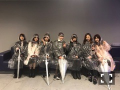
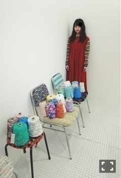
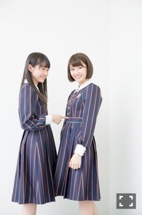
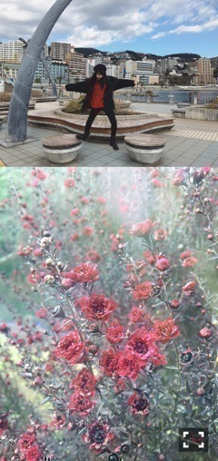

| 2017/01 09 Mon | 伊藤万理華 Linus and Lucy。756回目 |
「乃木坂46 SPECIAL LIVE 2017 at UNIVERSAL STUDIOS JAPAN®」
ユニバライブ二日間無事終了しました！
初日なかなか雨が激しくて
鼻水振り回しちゃって大変でしたが
今日は晴天！！良かったあ、、
エルモやスヌーピーたちと
踊ったおいでシャンプーは良い思い出。
たくさんの方が観に来てくださって
とても嬉しかったです。
風邪ひかないよう身体を暖めましょ

みんなでかっぱ着て
アトラクション乗りました。
やはりフライングダイナソー最高だー
雨と寒さに頭おかしくなったのか
訳もわからず泣きながら爆笑してました。
叫んで発散できるもの！
ジェットコースターだいすき！
年明け一発目のライブがユニバって幸せ、、
参加できて本当によかったです（≧∇≦）
USJスタッフの皆さま
ありがとうございました。

今月号のMdN連載のお相手は、
皆さんもご存知「Soup Stock Tokyo」
リサイクルショップ「PASS THE BATON」
ネクタイブランド「giraffe」など、
様々なブランドを展開する
株式会社スマイルズ
代表取締役社長の遠山正道さん！
表参道のPASS THE BATONで
対談しました〜夢のようだ〜
ここのディスプレイ参考に
部屋をつくっている私。。
それぞれの店舗のイメージや
社員の皆さんのイメージなど
教えていただきました。
とにかく楽しそう。
ひとつひとつ、丁寧な好奇心。
話を聞いててわくわくしました！！
ぜひ、チェックよろしくお願いします。
ちなみにこの赤いワンピースは
母のお下がりです！
生地いっぱい使ってて超かわいいんす。
この前次号の取材もしたよ〜
そちらもお楽しみに。

REALSOUND
井上小百合伊藤万理華インタビュー
ヨンデネ！！！！！
雑誌のインタビューもグラビアも
合わせると年末年始に
この組み合わせ計4本です！
同じ時にくるもんなんだなあ
ということで、ふたりの言いたいことは
じゅうぶん伝わってるはずだあ

年始の休みは充実してました。
歩き回った〜
私の周りには良き理解者がいるなあ
この人たちに刺激を受けるように
刺激を与えられるようになりたい！
あ、兄とあんなしゃべったの
初めてだったけど楽しかった〜
お酒のテンション面白かった〜
良い時間だった！！
次に向けて切り替えしよーーーー
は！！！！！！
まりか